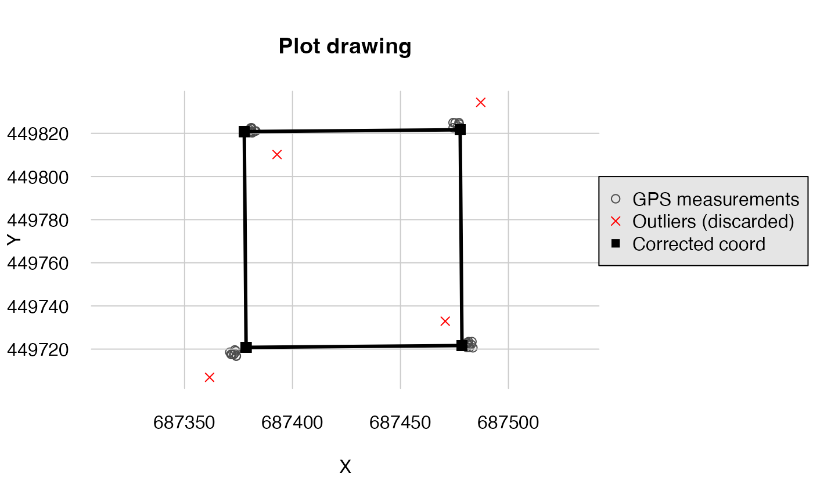
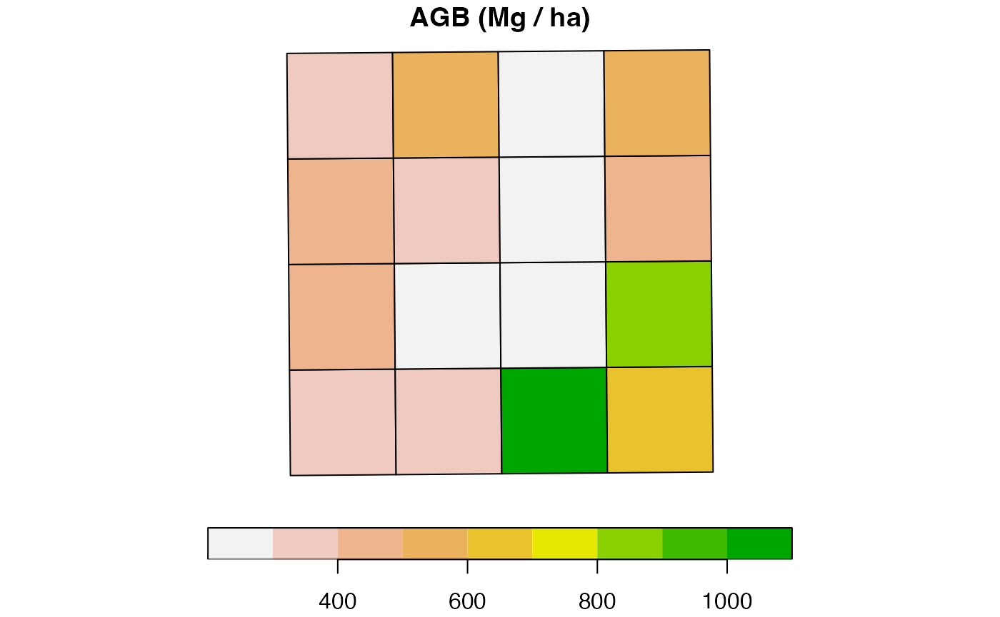

Manage trees and plot coordinates with BIOMASS
Arthur Pere
2024-03-19
Source:vignettes/plot.Rmd
plot.RmdRequirement
You need the following information to use the following function in your analysis :
- Dimension of the plots
- Coordinate GPS of minimum 3 points non-aligned and relatily far away with the corresponding relative coordinates
- The origin corner
- The X, Y directions
trees <- read.csv(system.file("external", "NouraguesPlot.csv",
package = "BIOMASS", mustWork = TRUE
))| plot | xRel | yRel | D | WD | H |
|---|---|---|---|---|---|
| NB1 | 1.30 | 4.7 | 11.459 | 0.643 | 12 |
| NB1 | 2.65 | 4.3 | 11.618 | 0.580 | 16 |
| NB1 | 4.20 | 6.9 | 83.875 | 0.591 | 40 |
| NB1 | 5.90 | 4.7 | 14.961 | 0.568 | 18 |
| NB1 | 6.40 | 4.1 | 36.765 | 0.530 | 27 |
| NB1 | 13.50 | 2.3 | 13.528 | 0.409 | 20 |
We can see in the table that we have for each trees the name of the
plot we have, the xRel and yRel, the relative
coordinate of the trees inside the plot. The rest of the column is for
calculate the AGB at the end.
coord <- read.csv(system.file("external", "Coord.csv",
package = "BIOMASS", mustWork = TRUE
))
plot(coord[, c("Long", "Lat")], asp = 1)Plot the coordinate long lat
We can see on the plot that the corner coordinates are spread.
| Plot | Corners | Lat | Long | xRel | yRel |
|---|---|---|---|---|---|
| NB1 | NB1_SW | 4.067 | 52.689 | 0 | 0 |
| NB1 | NB1_SW | 4.067 | 52.689 | 0 | 0 |
| NB1 | NB1_SW | 4.067 | 52.689 | 0 | 0 |
| NB1 | NB1_SW | 4.067 | 52.689 | 0 | 0 |
| NB1 | NB1_SW | 4.067 | 52.689 | 0 | 0 |
| NB1 | NB1_SW | 4.067 | 52.689 | 0 | 0 |
In the table, we have the name of the plot, the coordinate
Lat, Long (or another projected coordinates),
and xRel, yRel, the relative coordinate for
the points observed.
To manage the plots
Import the dataset and visualisation
The plot is referenced in the longitude latitude coordinate so you
must have the package proj4 if you are in this situation.
If you have projected coordinate, you can continue with the
projCoord argument instead of longlat
argument.
Correct the GPS coordinate
correct_plot <- correctCoordGPS(
longlat = coord[, c("Long", "Lat")],
coordRel = coord[, c("xRel", "yRel")],
rangeX = c(0, 100), rangeY = c(0, 100), drawPlot = TRUE,
maxDist = 10, rmOutliers = TRUE
)
#> Loading required namespace: proj4
str(correct_plot, max.level = 1)
#> List of 5
#> $ cornerCoords :'data.frame': 4 obs. of 2 variables:
#> $ correctedCoord:'data.frame': 40 obs. of 2 variables:
#> $ polygon :sfc_POLYGON of length 1; first list element: List of 1
#> ..- attr(*, "class")= chr [1:3] "XY" "POLYGON" "sfg"
#> $ outliers : int [1:4] 10 20 30 40
#> $ codeUTM : chr "+proj=utm +zone=39 +north +ellps=WGS84 +datum=WGS84 +units=m +no_defs"The output of the function is a list with a data.frame
corner it’s the corner of the plot, polygon
the spatial polygon, outliers the vector with the line
number of the outliers and codeUTM the UTM code for the
polygon.
The outliers are calculated by a measure of distance between the
predicted points and the GPS points. If this distance is higher than the
value of maxDist, the point is considered like
outliers.
Numbering the corner
We have to number the corner of the plot, it is working if we have exactly 4 points for each plot, so we have to do the correctCoordGPS before if we have not the correct number of points.
coord_num <- numberCorner(
projCoord = correct_plot$cornerCoords,
plot = rep("NB1", 4),
origin = c(F, F, F, T),
clockWise = TRUE
)
plot(coord_num[, c("X", "Y")], asp = 1)
text(coord_num[, c("X", "Y")], labels = coord_num[, "corner"], pos = 2, offset = 0.2)On the graph, you can noted than the corner number 1 the origin of the plot.
Cut the plot in multiple subplot
subplot <- cutPlot(
projCoord = coord_num[, c("X", "Y")],
plot = coord_num[, c("plot")],
corner = coord_num[, c("corner")],
gridsize = 25, dimX = 100, dimY = 100
)| plot | subplot | XRel | YRel | XAbs | YAbs | corner |
|---|---|---|---|---|---|---|
| NB1 | NB1_0_0 | 0 | 0 | 687378.5 | 449720.8 | 1 |
| NB1 | NB1_0_0 | 25 | 0 | 687378.3 | 449745.8 | 2 |
| NB1 | NB1_0_0 | 0 | 25 | 687403.5 | 449721.0 | 4 |
| NB1 | NB1_0_0 | 25 | 25 | 687403.3 | 449746.0 | 3 |
| NB1 | NB1_1_0 | 25 | 0 | 687378.3 | 449745.8 | 1 |
| NB1 | NB1_1_0 | 50 | 0 | 687378.1 | 449770.8 | 2 |
Trees managements
Attribute the trees to the subplot
trees$subplot <- attributeTree(trees[, c("xRel", "yRel")], rep("NB1", nrow(trees)), subplot)Calculate the AGB and spatialisation
trees$AGB <- computeAGB(trees$D, trees$WD, H = trees$H)
AGB <- summaryByPlot(trees$AGB, trees$subplot, drawPlot = TRUE, subplot = subplot)
print(AGB)
#> $AGB
#> plot AGB
#> 1 NB1_0_0 19.38352
#> 2 NB1_0_1 23.20641
#> 3 NB1_0_2 67.08190
#> 4 NB1_0_3 39.52547
#> 5 NB1_1_0 25.89987
#> 6 NB1_1_1 17.65023
#> 7 NB1_1_2 14.69783
#> 8 NB1_1_3 54.67545
#> 9 NB1_2_0 29.60386
#> 10 NB1_2_1 20.95844
#> 11 NB1_2_2 17.11330
#> 12 NB1_2_3 26.44309
#> 13 NB1_3_0 23.24261
#> 14 NB1_3_1 34.46043
#> 15 NB1_3_2 16.31269
#> 16 NB1_3_3 33.33348
#>
#> $polygon
#> Simple feature collection with 16 features and 2 fields
#> Geometry type: POLYGON
#> Dimension: XY
#> Bounding box: xmin: 687377.7 ymin: 449720.8 xmax: 687478.5 ymax: 449821.6
#> CRS: NA
#> First 10 features:
#> plot AGB polygon
#> 1 NB1_0_0 310.1364 POLYGON ((687378.5 449720.8...
#> 2 NB1_1_0 414.3979 POLYGON ((687378.3 449745.8...
#> 3 NB1_2_0 473.6617 POLYGON ((687378.1 449770.8...
#> 4 NB1_3_0 371.8818 POLYGON ((687377.9 449795.8...
#> 5 NB1_0_1 371.3025 POLYGON ((687403.5 449721, ...
#> 6 NB1_1_1 282.4038 POLYGON ((687403.3 449746, ...
#> 7 NB1_2_1 335.3350 POLYGON ((687403.1 449771, ...
#> 8 NB1_3_1 551.3669 POLYGON ((687402.9 449796, ...
#> 9 NB1_0_2 1073.3104 POLYGON ((687428.5 449721.2...
#> 10 NB1_1_2 235.1652 POLYGON ((687428.3 449746.2...Attribute the trees to GPS coordinates
There is two maners to attribute the trees to GPS coordinates
TreeCoord <- attributeTreeCoord(
xy = trees[, c("xRel", "yRel")],
plot = trees$plot,
coordAbs = subplot,
dim = c(100, 100)
)| Xproj | Yproj |
|---|---|
| 687383.2 | 449722.1 |
| 687382.8 | 449723.5 |
| 687385.4 | 449725.1 |
| 687383.1 | 449726.7 |
| 687382.5 | 449727.2 |
| 687380.7 | 449734.3 |
If you want to have in GPS (longitude/latitude) coordinates (need to install proj4 first) :
#TreeCoord <- as.data.frame( proj4::project(TreeCoord, proj = correct_plot$codeUTM, inverse = TRUE) )| Xproj | Yproj |
|---|---|
| 687383.2 | 449722.1 |
| 687382.8 | 449723.5 |
| 687385.4 | 449725.1 |
| 687383.1 | 449726.7 |
| 687382.5 | 449727.2 |
| 687380.7 | 449734.3 |
If you want to have the GPS (longitude/latitude) coordinates without passing through all this step however you must use the numberCorner function:
coordAbs = data.frame(X = c(4.066923, 4.067865, 4.067842, 4.066905), Y = c(52.68883, 52.68877, 52.68793, 52.68783))
ncoordAbs = numberCorner(projCoord = coordAbs,
plot = rep("NB1", 4),
origin = c(TRUE, FALSE, FALSE, FALSE),
clockWise = TRUE)
TreeCoord <- attributeTreeCoord(
xy = trees[, c("xRel", "yRel")],
plot = trees$plot,
coordAbs = ncoordAbs,
dim = c(100, 100)
)| Xproj | Yproj |
|---|---|
| 4.067 | 52.689 |
| 4.067 | 52.689 |
| 4.067 | 52.689 |
| 4.067 | 52.689 |
| 4.067 | 52.689 |
| 4.067 | 52.689 |